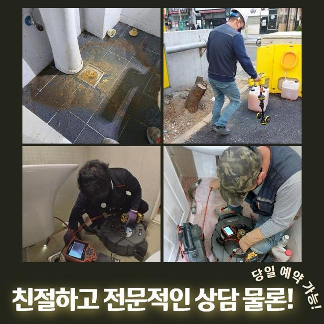
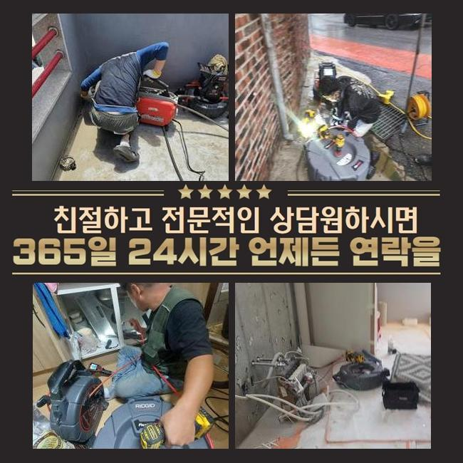
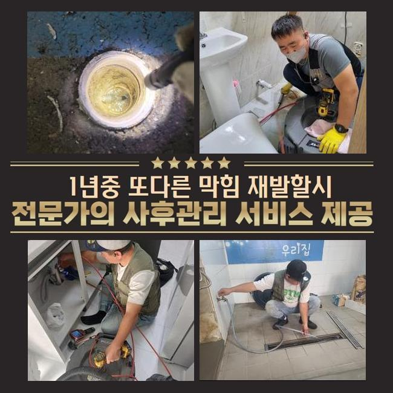
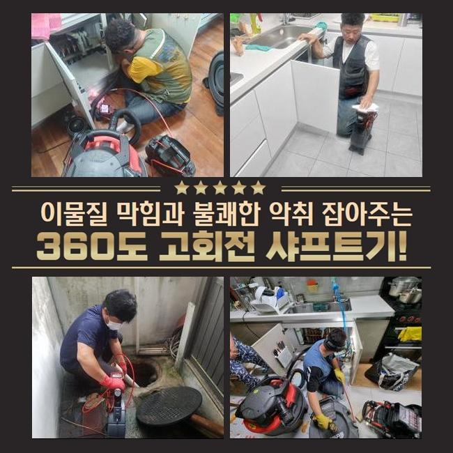
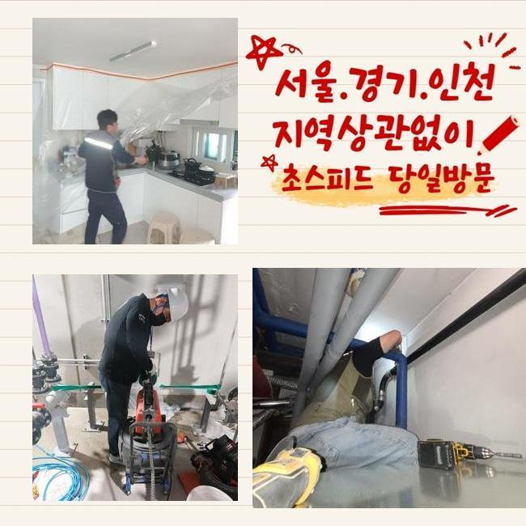

🏠 노원구 월계동하수구막힘 상계동 하수구청소 배관전문
용인 하수구막힘 전문 시공 후기

📋 작업 개요
- 위치: 용인
- 서비스 유형: 하수구막힘, 배관막힘, 누수수리, 역류해결, 배관청소
- 작업 일시: 2025. 3. 16. 6:13
- 업체명: 하수구수사대 (010-5615-2118)
🔍 문제 상황
노원구 월계동하수구막힘 상계동 하수구청소 배관전문
어제 저녁에 의뢰인께 긴급하게 전화를 받은후에 알려주신 주소지로 달려갔습니다
고객분께서 난감한 상황때문에 도움을 청하신 것으로 저희 업체는 서둘러서 전문 기기들을 차에 실어 현장에 도착했어요
배수구가 막힌 경우에 실생황에 큰 어려움이 일어나므로 막힘사고를 최대한 빨리 해결 해드리는게 제일 중요한 포인트입니다
현장에서 일단 문제가 발생한 곳을 체크 했습니다
하수관 역류사고는 세탁기가 있는 베란다에서 발견된 것인데 정상적으로 하수가 배출되지 않았고 역류하고있는 상황이였어요
고객분께서는 하수라인이 반복적으로 막히는 상황을 해결하기 위해 다양하게 노력 해봤지만 점차 상황이 악화되어 세탁기기를 이용할 수 없게 되어버린 상황까지 왔다고 말씀하셨어요
고객분께서 배수라인이 역류하는 상황을 해결해보자 어렵지 않게 구매할 수 있는 약품이나 제품등을 이용하지만 문제의 원인이 되는 부분을 찾아 해결을 하실 수가 없어요

🔎 원인 분석
💡 전문가 진단: 정밀 진단 장비를 사용하여 슬러지의 고착 여부를 판명하고 타격/세척 작업을 실시했습니다.
하수설비는 사용할수록 오염물질이 축적되면서 막힘사고가 생겨나므로 명확한 이유를 찾고 수리를 진행하는게 좋습니다
우선적으로 배수관 속과 외부의 라인 체크를 했어요
하수관 역류상황을 자세하게 보려면 안쪽만 볼게 아니라 건물 밖으로 이어진 배관들도 점검해보는게 중요해요
배수구는 집에서 사용한 오수를 바깥쪽 하수관으로 배출시키는 구조로 되어있어서 막힘을 일으키고 있는 구심점이 내부쪽에 있는지 바깥쪽인지 잘 살펴봐야합니다
검사를 완료한 결과로는 밖으로 난 하수관에 불순물이 가득해 오수가 정상적으로 배출되지 못했던 것이였어요
밖으로 이어진 하수관의 막힘사고를 해결하려면 내외부 배수관을 한꺼번에 수리해요
내시경장치를 활용해 배수구 안쪽을 확인해봤어요
내시경장비로 배수구 안쪽에 쌓여있는 노폐물이 배수라인을 완전히 막고있는 상황을 발견했어요

🔧 작업 과정
샤프트기를 사용해서 하수관에 가득한 노폐물을 제거하는 작업을 진행했어요
샤프트기계는 체인이 돌아가는 파워를 이용하여 불순물을 효율적으로 처리할 수 있는 기계로서 하수라인에 달라붙어 있는 굳어버린 침전물을 분쇄하여 처리하는데 적합해요
샤프트기는 하수라인 내벽에 두껍게 층을 이룬 슬러지를 파쇄하여 배관 속을 깔끔하게 청소해요
하수관이 막혀있는 상황이 생각보다 심한편이라 저희들이 장시간 반복하여 하수라인 속에 붙어있던 슬러지를 모두 제거 할 수 있었습니다
소량의 찌꺼기등은 사용을 할수록 하수라인에 쌓이게 되면서 오수가 빠져나가는 길목을 막아버리므로 지금처럼 오염물질이 안쌓이도록 노력하는 것이 중요해요
내부 배관에서 빼냈던 불순물들이 배관 속으로 들어가지 않게 걸러서 버리는 작업과정까지 끝내고 하수관을 다시 확인합니다
오늘은 단단하게 굳어버린 불순물이 배수라인을 막고 역류현상을 일으키고 있었지만 시공을 완료한후 모니터를 통하여 배수구 내부 상태가 깔끔하게 청소된걸 확인했어요
마지막 마무리까지 다하고 물을 가득 채워 내려보내면서 물이 잘 안내려가는 등의 문제들이 남아있는건 아닌지 통수 확인을 하였습니다
하수관에서 특별한 일 없이 하수가 잘 내려가는 모습을 체크한 후에 작업과정을 마무리 지었습니다
의뢰인께서는 막힘사고 이후 오류들이 해결되어가는 과정까지 시공에 들어가면서부터 저희들과 같이 하나하나 지켜보셨습니다
저희 전문진은 배수구 관련 문제들을 가장 빠르게 해결 해드려요
배수구가 막힌 경우에 생활 속에서 크고 작은 불편함이 발생하므로 저희 전문진은 이러한 문제를 처리 해드리기 위해서 언제나 만반의 준비를 하고있습니다
위와같은 하수라인의 역류 상황들은 배수적인 문제뿐만 아니고 위생적인 부분에도 영향을 주므로 신속하게 처리하시는게 좋습니다


✅ 작업 완료
만약에라도 누수가 밑에집으로 번져 피해를 주게 되었다면 우리집과 관계성이 있는 누수가 맞는지 파악해야하며 전문진에게 점검을 의뢰하여 확인해보셔야 합니다
저희 전문진은 불필요한 작업없이 발 빠르게 처리속도로 고객분께서 만족하실 수 있게끔 해결 해드리겠습니다
하수관 문제로 전문가의 도움이 필요하다 싶으시면 저희 전문진에게 문의 해주시면 친절하게 응대하겠습니다
배수관의 말썽으로 곤란을 겪고 계시다면 저희 전문가에게 의뢰해주세요!


⚠️ 베란다 누수 및 방수 관리 방법
- ✅ 비가 많이 올 때 창틀 주변이나 아래층 천장에 얼룩이 생기는지 정기적으로 확인해 보세요.
- ✅ 우수관 주변 실리콘 마감이 들뜨거나 깨진 틈새가 있는지 손상 여부를 수시로 체크하세요.
- ✅ 베란다 바닥 타일의 줄눈(메지)이 소실되면 그 틈으로 물이 침투하여 누수가 유발됩니다.
- ✅ 누수 의심 증상 발견 시 방치하면 아래층 손실이 커지므로 즉시 전문가의 진단을 받으십시오.
💡 핵심 정리
- 확실한 장비 작업(내시경 점검 및 샤프트 스케일링)으로 원인을 뿌리 뽑습니다.
- 작업 후 1년 이내에 동일한 부위 재발 시 100% 무상 A/S 서비스를 보장합니다.
- 서울 · 경기 · 인천 전 지역에 24시간 언제든 긴급 출동할 수 있도록 항시 대기 중입니다.
❓ 자주 묻는 질문 (FAQ)
🚨 용인 하수구막힘 문제로 고민이신가요?
정확한 원인 진단과 확실한 시공으로 재발 없는 해결을 약속드립니다.
24시간 긴급 출동 | 서울 · 경기 · 인천 전지역 | 1년 내 재발 시 무상 A/S